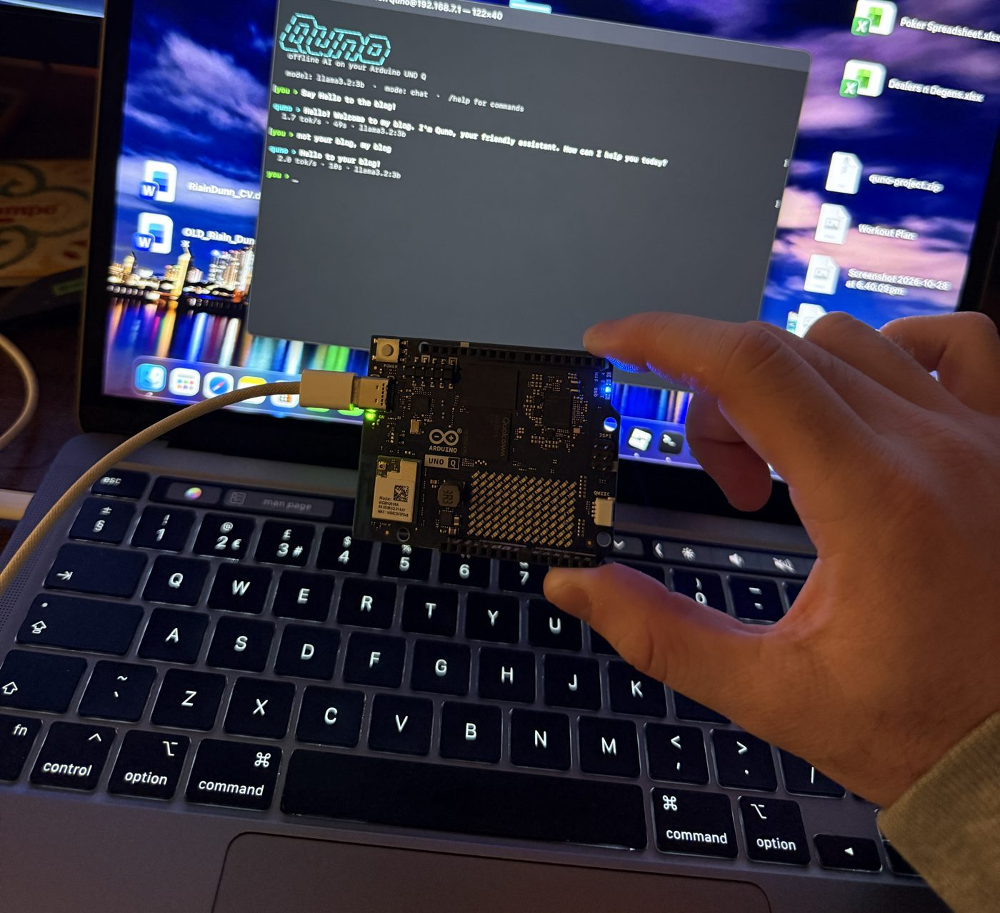
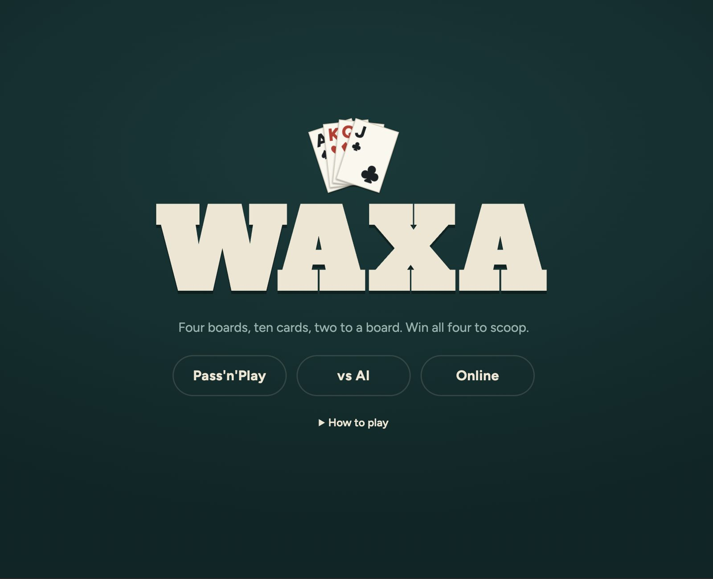
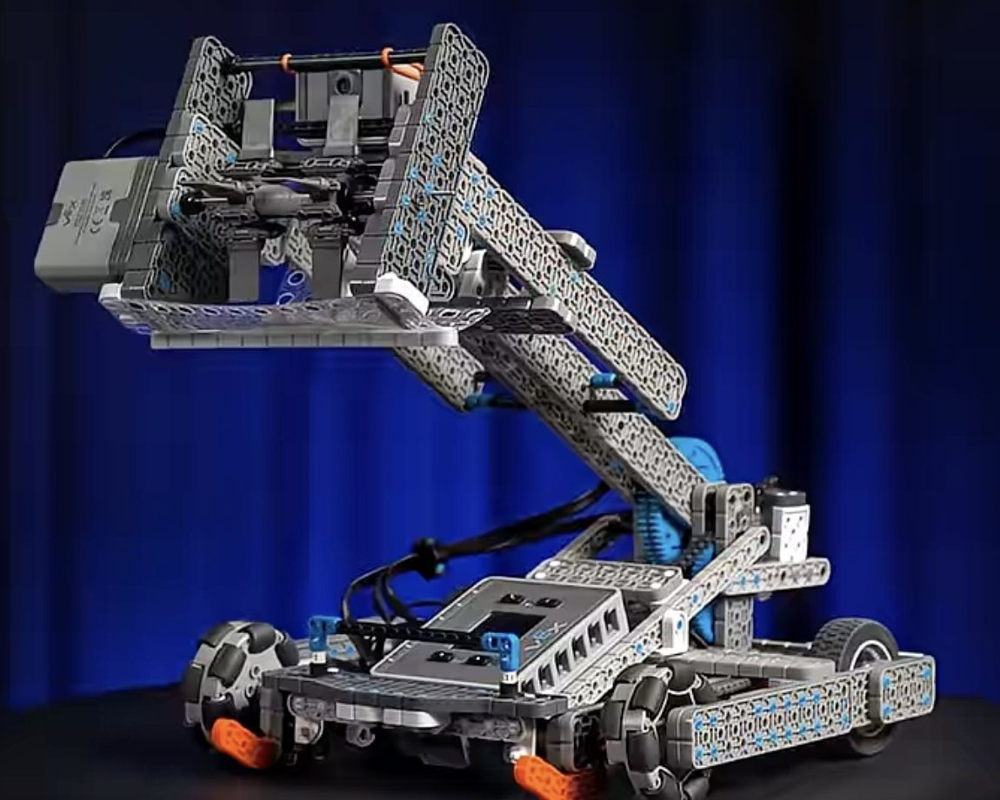
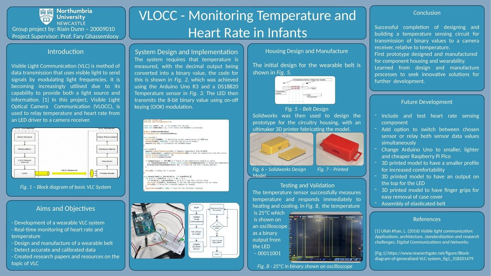
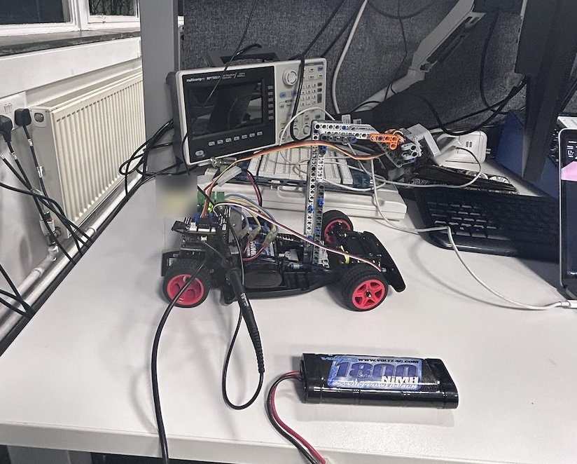

Live in the lab
Ping Pong PID
In progress
Projects
A quick look at what I've built.

Fig. 01 · Personal project
Quno: an offline AI on an Arduino UNO Q
ArduinoUNO QOllamaPythonLinuxEdge AI

Fig. 02 · Personal project
Waxa: a four-board poker game as an app
JavaScriptHTML/CSSGame AIUI design

Fig. 03 · Volunteering
Flop-Bot: mentoring a VEX IQ robotics team
VEX IQBlock codingMechanical buildMentoring
Image: VEX Robotics

Fig. 04 · Final year project
VLC-based baby monitoring system
A wearable health monitor that measured heart rate and temperature and sent the data wirelessly using Visible Light Communication (data carried by light). I designed the embedded hardware, wrote the firmware, integrated the sensors and built the real-time data link.
Embedded CSensorsVLCFirmware

Fig. 05 · University team project
NXP Cup self-driving car
Wrote the servo steering control code for an autonomous model car as part of a three-person team, then merged everyone's work into a finished prototype on deadline.
ARM KL25ZCControlTeamwork